The Milestone Payer
End-user buyer · lives locally · will move in"I know roughly what's coming. I just want to know exactly how much, exactly when, and that it landed."
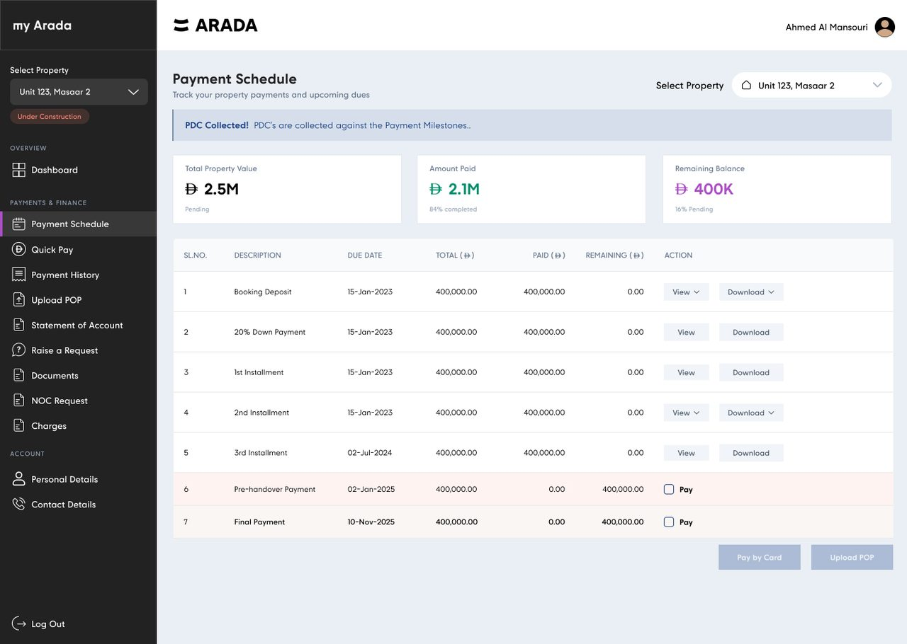
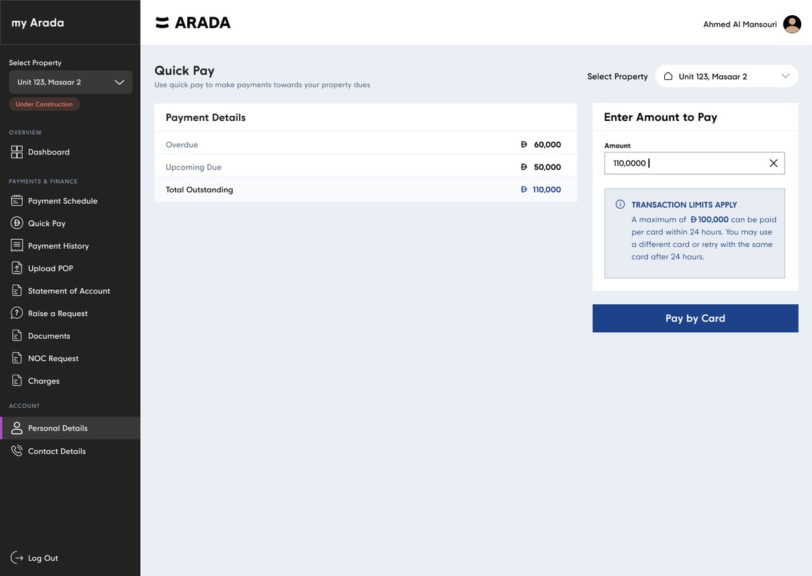
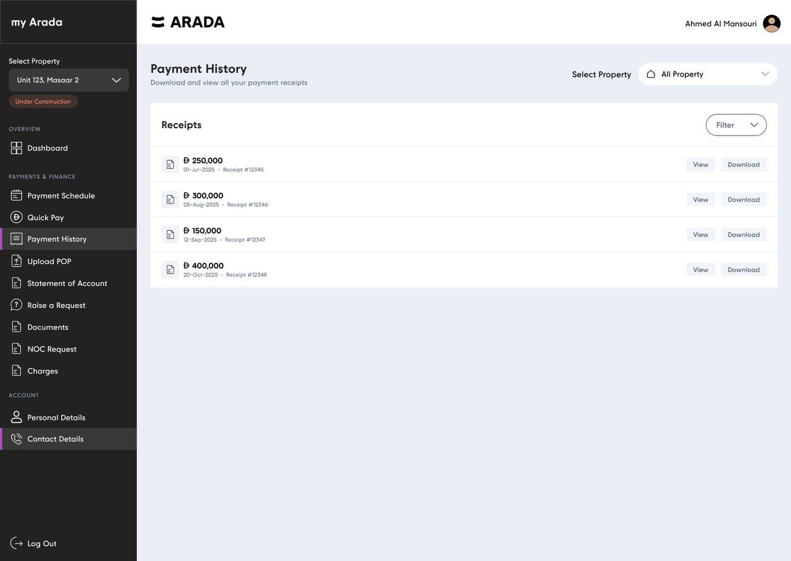
Context
In the UAE, a large share of residential property is sold off-plan — bought from architectural plans, then paid for in instalments tied to construction progress, often over two to four years before anyone gets a key.
The payment schedule in this product runs from a booking deposit in January 2023 to a final payment in November 2025. Seven milestones. Nearly three years of a customer sending significant sums of money toward a building they can only visit as a construction site.
That shapes everything about the design problem. This isn't a high-frequency consumer app where habit carries the user. It's a low-frequency, high-value, high-anxiety relationship. A customer might log in four times a year — and every single one of those visits is about money, proof, or permission.
The domain also carries its own machinery: post-dated cheques collected against milestones, no-objection certificates required before a customer can rent or resell, registration and meter fees arriving separately from the payment plan, and card networks that cap what can move in a single transaction.
What makes this hard
For nearly three years, the only tangible thing a buyer has of their future home is a payment schedule. That screen isn't a table. It's the product.
The framing that drove every prioritisation decision on this projectThe Problem
Before the portal, almost every customer question became a human conversation — and every human conversation became a delay.
Customers needed to move between multiple systems, or contact the sales and finance teams directly, to do things that should take thirty seconds: check what was due, pay it, get a receipt, find their sales purchase agreement, ask for an NOC, or update a phone number.
The information existed. It just wasn't anywhere the customer could reach it. So the customer's only interface to their own property was a person — one who worked office hours in a single time zone, and who had to look each answer up manually.
The cost landed in three places at once: customers waited, the finance and CX teams spent their days on lookups instead of exceptions, and late payments turned into disputes that could have been prevented by a due date the customer could actually see.
Goals
Design Process — 01. Discovery
Working inside a developer with existing customers meant the evidence already existed — in support queues, in finance processes, and in the questions people kept asking.
Stripped of the specific wording, every enquiry reduced to one of six jobs. These became the portal's job list — and later, its navigation.
Design Process — 02. Who we designed for
Not demographics. Three different relationships with the same property — each of which breaks the interface in a different place.
"I know roughly what's coming. I just want to know exactly how much, exactly when, and that it landed."
"I have three units in two communities. Don't make me remember which is which, and don't make me phone Sharjah at 3am."
"Payments are basically done. Now it's all forms — and I don't know which form I need or what happens after I send it."
Design Process — 03. The journey
Mapping the ownership lifecycle showed the portal isn't one experience — it's five, and the customer's need inverts completely from beginning to end.
Excitement, and a large first transfer. The customer wants confirmation that the money arrived and the unit is theirs.
FrictionBooking confirmation and the sales purchase agreement lived in an inbox, easily lost.
In the portalBoth documents are permanently retrievable from the document centre, with preview and download.
The longest stage by far — two to three years of instalments against build progress, with nothing to see but paperwork.
FrictionNo visible schedule meant missed dates, penalties, and disputes that felt unfair to both sides.
In the portalThe payment schedule as the primary artefact: what's paid, what's next, what it costs, and how to clear it.
Attention shifts abruptly from money to fees and readiness — registration, meters, parking, penalties.
FrictionCharges arrive separately from the payment plan and feel like surprises.
In the portalA dedicated Charges view using the same table language, so fees are legible the moment they appear.
A dense burst of one-time processes: key collection, access cards, title deed, signature declarations.
FrictionEvery one of these was a phone call, and none of them had a status the customer could check.
In the portalSeven named service actions on the dashboard, each producing a tracked request with a reference.
Living in it, letting it, or selling it — each needing an NOC, a statement, or a defect report.
FrictionPost-handover owners had the least support and the most bureaucratic needs.
In the portalNOC requests, statements of account, and defect reporting with file upload, all self-service.
The insight that came out of this map: the dashboard cannot be static. A customer in stage two needs a payment schedule; a customer in stage four needs a services grid. The shipped dashboard therefore leads with property value and payment actions, then presents services as a persistent grid below — so the same layout serves both, with the unit's status pill telling the customer which set of rules currently applies to them.
Design Process — 04. Structure
Twelve destinations, four groups, one persistent question answered at all times: which property are we talking about?
Customers don't arrive thinking "I need the documents module". They arrive in one of four states of mind: orienting (what's the situation?), paying (money needs to move), requesting (I need something from Arada), or maintaining (my details changed). The four groups map to those states, which is why Overview holds exactly one item and nobody has ever asked where the dashboard went.
Multi-unit ownership is common, and a screen that doesn't say which unit it refers to is worse than useless when six figures are in play. The property switcher is therefore persistent in the sidebar and repeated in the page header — deliberate redundancy, because the cost of confusing two units is high and the cost of one duplicated control is low.
Payment History additionally supports an "All Property" selection, because reconciliation is the one task owners genuinely want to do across their whole portfolio at once.
The status pill — "Under Construction" before handover, "Handed Over" after — sits directly under the switcher rather than on individual pages. It's the single piece of information that changes what every other screen means: which services are available, whether handover actions apply, whether a document should exist yet.
It carries into the forms too. On a service request the same pill appears beside the pre-filled property, so the customer can see at a glance that they are requesting against the right unit in the right state.
Version one shipped with Raise a Request, Documents and NOC Request sitting inside "Payments & Finance". They don't belong there — they're service and document actions, not finance ones. It happened because of a phased release: the finance modules were the funded first phase, and the service items got added into the existing group rather than holding the launch for a restructure.
It was scannable at twelve items, so it worked. It still wasn't right, and it wouldn't survive the roadmap. The refresh split the service actions into their own group and replaced the one-way "Raise a Request" with Service History — which closes the last of the six original friction points, because a customer can now see where a request actually is instead of only that it was sent.
Design Process — 05. Wireframes
Low-fidelity layouts for the four highest-traffic screens, built to settle hierarchy and content grouping before any visual design was applied.
Design Process — 06. Flows
Paying a milestone, clearing everything outstanding, and submitting a formal request. Each was diagrammed with its failure branches attached, because in this domain the branch is the part that costs money.
The customer knows which instalment is due and wants to clear exactly that. Entry is the payment schedule row, not a menu item.
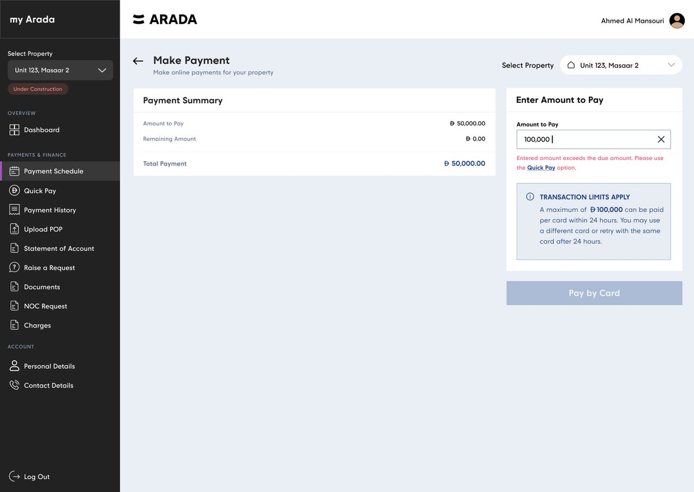
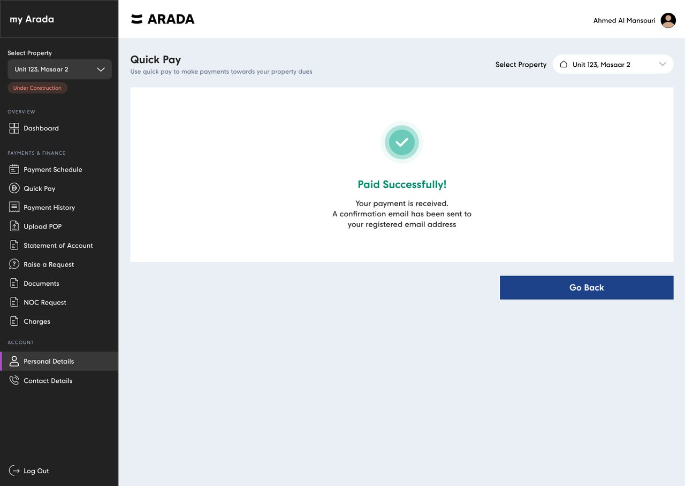
The customer has drifted — something is overdue, something else is coming — and wants it all gone in one action. This is where the domain's hardest constraint lives.
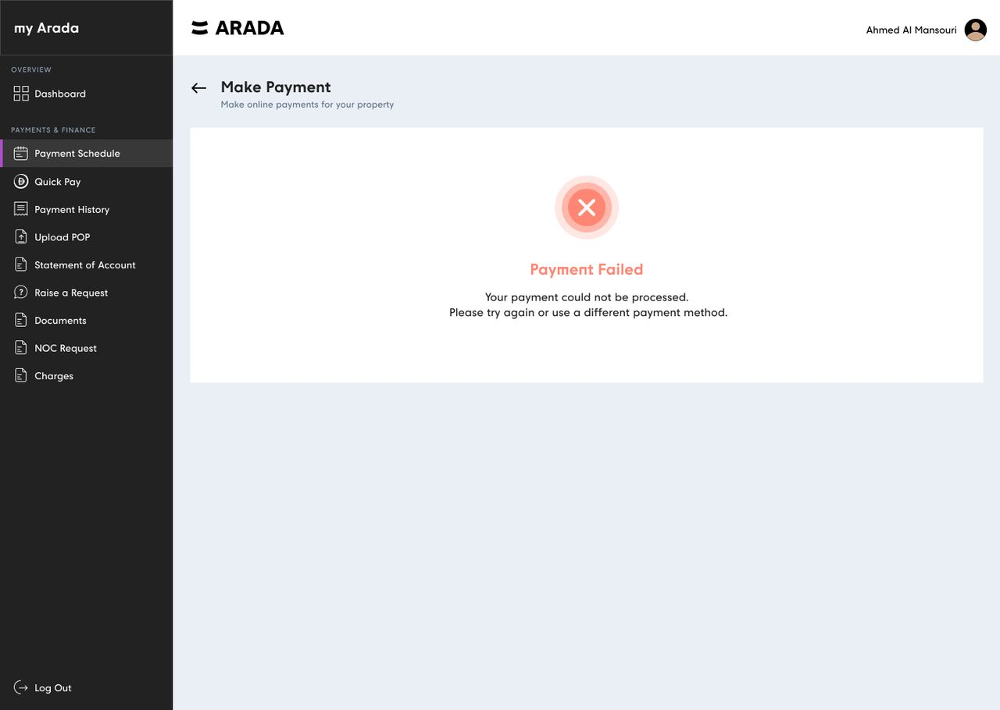
One flow serves every request type — NOC, title deed, power of attorney, key collection, defect report. Getting it right once paid off across the entire services set.
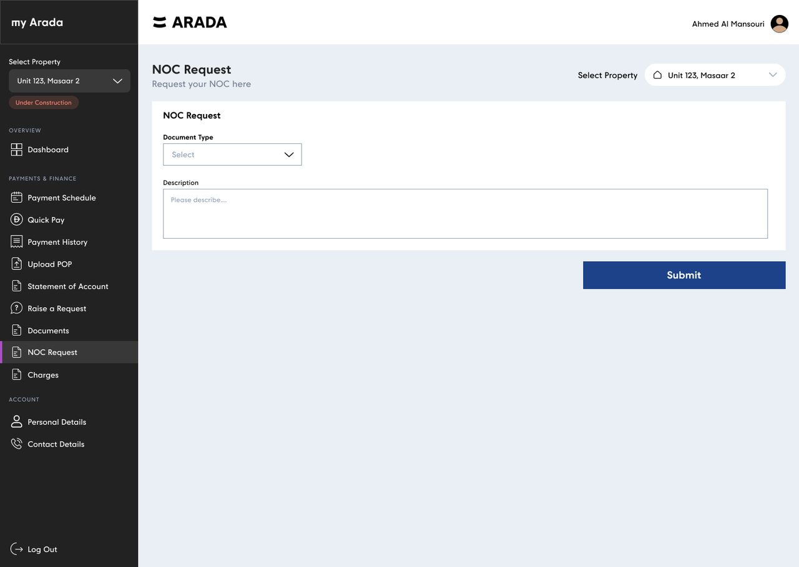
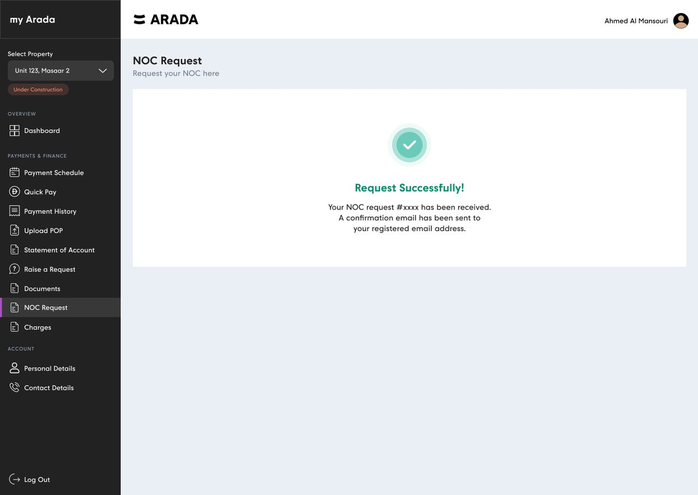
Design Process — 07. The system
Twelve destinations sharing one visual language. The constraint I set: no screen introduces a new component unless it can be reused by at least one other.
Colour — semantic, not decorative
Three colours carry financial meaning — settled, outstanding, attention — and they are never borrowed for anything else. A customer scanning seven milestone rows should be able to read their position from colour alone, then confirm it in the numbers.
The refresh inverted the shell: the sidebar went from near-black to a pale #EAEFF5, and the saturated dark moved to the top bar and the property-value banner. Same hierarchy, better outcome — the one number the customer came for is now the darkest, heaviest object on the page instead of the navigation being the loudest thing they see first.
Type — one family, five roles
Currency figures use tabular numerals throughout so digits align vertically down a column — the difference between a table you can scan and a table you have to read. Amounts are always paired with the dirham glyph rather than relying on a column header three rows up.
One chip component, five semantic variants. Every state a customer can be in is expressed with the same shape, so the shape itself becomes the signal that something has a status.
The set that covers all twelve destinations. Reuse counts are what made an 8–12 week timeline possible — the payment schedule and charges screens are the same table with different columns.
Milestones, charges, receipts. Row tint carries payment state; per-row actions stay inline.
Used on 4 screensA single figure with a label and a computed sub-line, e.g. "84% completed".
Used on 3 screensFive variants covering payment, request and property status.
Used on 6 screensNon-blocking guidance — transaction limits, cheque collection notices.
Used on 3 screensNumeric entry with clear affordance, inline validation and a linked remedy.
Used on 2 screensDashed region with purpose copy explaining why the file helps.
Used on 3 screensIcon, headline, next-step sentence, single onward action. Success and failure share the frame.
Used on 4 screensIllustration plus a plain sentence. Written as reassurance, not as absence.
Used on 2 screensThe context control. Persistent in nav, repeated in page header, with an aggregate option.
Every screenIcon, name, one line. The unit of the dashboard services grid.
7 instancesGrouped multi-select with Reset and Apply. Scales as history grows.
Used on 2 screensAmount-first line item with date, reference, preview and download.
Used on 2 screensHigh-Fidelity UI
Eight areas of the portal, each with the reasoning that shaped it. Click any screen to view it full size.
On a portal someone visits four times a year, the landing screen has one job before all others: re-orient a customer who has forgotten how any of this works. Property value leads, with its pending status stated plainly rather than hidden behind a tooltip.
Only then come actions — and only three of them, chosen because they cover the overwhelming majority of visits: upload proof of a transfer, pay what's due, read the construction update.
Seven milestones from booking deposit to final payment. The raw data is a ledger; the customer's question is emotional — am I on track? Three summary tiles answer it above the table, so nobody has to do arithmetic across rows to find out how they're doing.
Paid milestones stay visible rather than collapsing away. The completed rows are the reassurance — five settled instalments above two outstanding ones tells a very different story than two outstanding ones alone.
2.1M of 2.5M settled, 400K remaining — computed and surfaced by the interface rather than requested from finance.
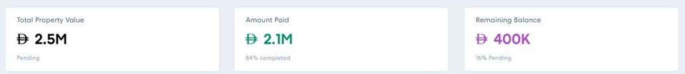
Quick Pay exists for the customer who has drifted: something overdue, something upcoming, and no appetite for paying twice. It collapses both into one figure — 60,000 overdue plus 50,000 upcoming, 110,000 total — and offers a single field.
Then the domain intervenes. A single card can move at most 100,000 in 24 hours. The most obvious action in the product is one the payment network will decline.
The decision here defines the whole project's approach to error: tell them before, not after. The limit lives in a persistent panel beside the amount field — present before a keystroke, naming both remedies, framed as information rather than as a warning about something they did wrong.
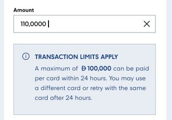
Two failure moments, two different design jobs. The first is preventable, so it's caught inline: enter more than a single milestone is worth and the message doesn't just refuse — it names Quick Pay as the right tool and links straight to it. The pay button holds disabled until the number works.
The second isn't preventable. Cards decline for reasons the portal will never know about. So the failure state avoids pretending to diagnose, and instead gives the two things a customer actually needs: confirmation that nothing was taken, and two concrete options — retry, or use a different method.
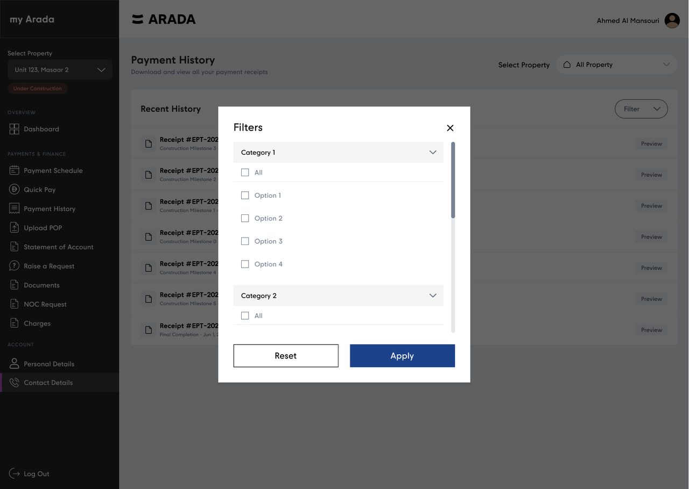
Owners don't browse their payment history for pleasure. They come with a specific errand: prove a payment to a bank, hand a receipt to an accountant, check whether a transfer landed. Every decision here follows from "this is evidence retrieval".
So the amount leads each row — it's the thing being searched for — with date and receipt number as supporting identification, and both Preview and Download offered because verifying and filing are different tasks.
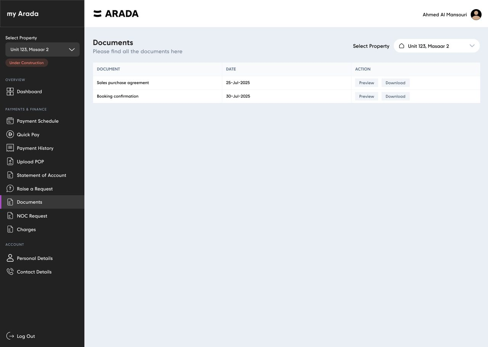
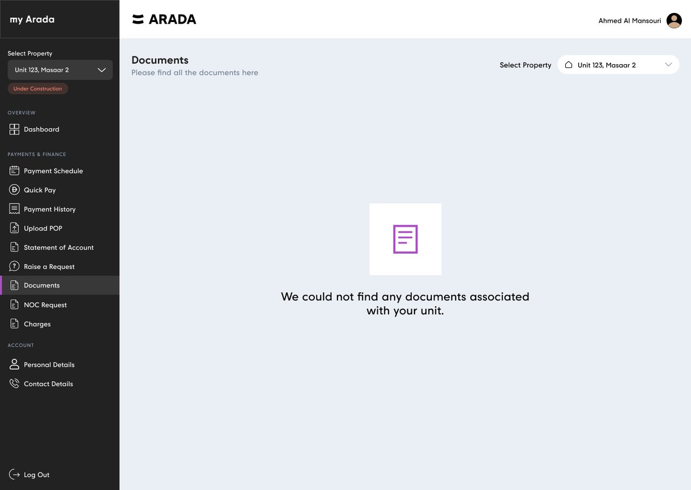
"Can you send me my SPA again?" was among the most repeated requests the sales team fielded. It is also the easiest to eliminate: the document exists, it belongs to the customer, and nothing about handing it over requires a human.
The empty state mattered more than the populated one. Early in ownership there may genuinely be no documents yet — and a customer who has just transferred a booking deposit and finds a blank screen will assume something is broken and reach for the phone. The copy therefore explains rather than apologises: no documents are associated with this unit, which is a statement about the unit's stage, not about the portal failing.
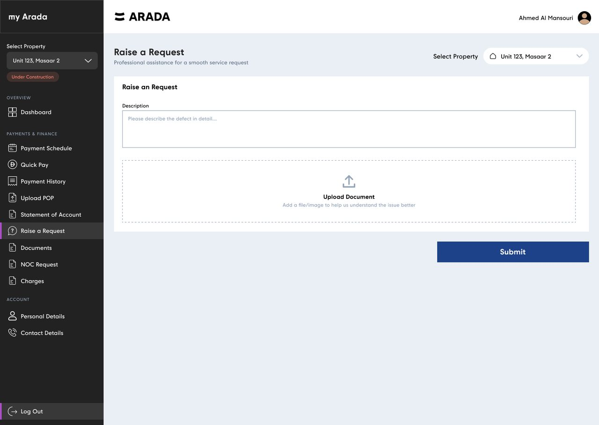
Reporting a defect and requesting a no-objection certificate look like the same task — fill in a form, press submit. They aren't, and treating them identically would have made both worse.
Raise a Request is free-text with an optional upload. Someone reporting a problem is often frustrated and doesn't know the right category. Asking them to classify their own complaint before describing it adds friction exactly where patience is thinnest. A photo does more than a dropdown ever could.
NOC Request is structured. An NOC is a legal instrument and the type determines the entire downstream process. Free text here would guarantee back-and-forth, so document type is a required select and description is context, not classification.
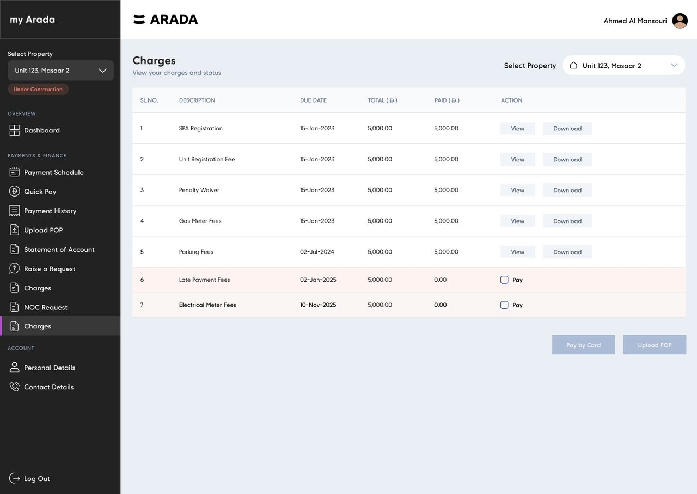
Charges are the fees that sit outside the payment plan: SPA registration, unit registration, gas and electrical meters, parking, penalty waivers, late payment fees. They arrive unpredictably and feel, to a customer, like surprises.
This screen is the clearest evidence for the component approach. It is the payment schedule's table with different columns — same row tinting for unpaid, same inline Pay checkbox, same dual footer actions. A customer who has learned one has learned both, and the design and build cost of the second was a fraction of the first.
Design Process — 08. States
On a portal handling six-figure transfers, the empty, invalid and failed states aren't edge cases. They're where trust is either earned or lost — so they were designed alongside the happy path, not after it.
| Module | Default | Empty | Validation | Failure | Success |
|---|---|---|---|---|---|
| Payment Schedule | ✓ | – | ✓ | ✓ | ✓ |
| Quick Pay | ✓ | ✓ | ✓ | ✓ | ✓ |
| Payment History | ✓ | ✓ | ✓ | – | – |
| Documents | ✓ | ✓ | – | – | – |
| Raise a Request | ✓ | – | ✓ | – | ✓ |
| NOC Request | ✓ | – | ✓ | – | ✓ |
| Charges | ✓ | ✓ | ✓ | ✓ | ✓ |
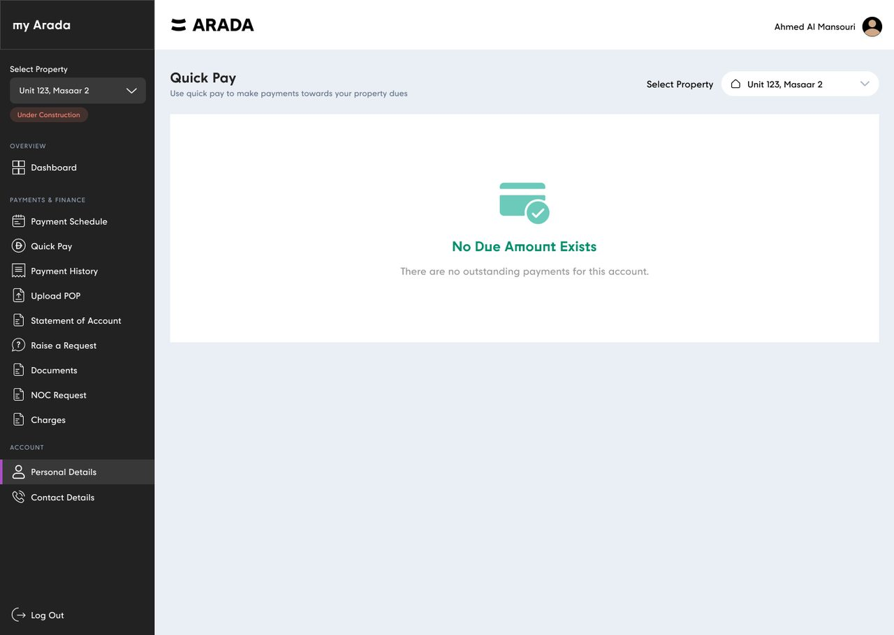
Design Challenges
Six problems that couldn't be solved by layout alone.
Responsive Design
Designed desktop-first, because that's where six-figure payments actually get made — then made genuinely usable on a phone, where the checking happens.
The payment schedule carries serial number, description, due date, total, paid, remaining and an action. Squeezing that into a phone produces something technically responsive and practically unusable. So below the tablet breakpoint each row becomes a card — description and status on top, the figure given the prominence it deserves, and the action as a full-width target.
The reordering is the point. On desktop the eye scans columns, so chronology leads. On mobile the thumb scrolls, so what needs action is promoted above what's already settled — the same data, re-sequenced around what the device is good for.
A portal that manages someone's largest financial commitment cannot be conditional on perfect eyesight or a steady hand.
Design ran alongside the build on a two-to-three month timeline, so handoff was continuous rather than a milestone.
Gallery
The full set as delivered — happy paths, empty states, validation, failure and confirmation. Click any screen to open it full size, then use the arrow keys.
Outcomes
A complete self-service surface, from dashboard through payments, documents and requests to account management.
Access cards, rent-my-unit, title deed, power of attorney, title deed authorisation, signature declaration and key collection.
Every path that moves money or submits a document has its empty, invalid, failed and confirmed states specified.
Each of the original goals maps to a specific mechanism in the shipped product, rather than to a general improvement in usability.
Twelve destinations behind a single sign-in, with the property switcher making multi-unit ownership legible rather than confusing. The support team stops being the interface.
Per-row milestone payment, aggregated Quick Pay, part-payment respected, card caps disclosed up front, and a proof-of-payment rail for the amounts cards can't carry. The failure mode that generated the most calls is designed out rather than handled.
Every request returns a quotable reference and a confirmation email. The single most common reason for a follow-up call — "did you get it?" — no longer has a reason to exist.
Contracts and confirmations retrievable on demand with preview and download; proof of payment and supporting evidence uploadable inline. "Please resend my SPA" becomes a two-click self-service action available at 2am from any time zone.
Payment status, receipts, due dates, charges and documents — the five things support was asked for most — are all now answerable by the customer without contact.
Advisories before attempts, validation that routes rather than refuses, failure states that don't blame, and confirmations that state what happens next. Trust in a financial product is built almost entirely in the states most products leave until last.
Reflection
The parts I was least satisfied with are the most useful things to talk about — and two of them have since shipped differently.
V1 buried Documents, NOC Request and Raise a Request inside "Payments & Finance", because the finance modules were the funded first phase and I chose shipping over restructuring. It was scannable, but it wasn't right.
The refresh split service actions into their own group. Worth saying plainly: the fix took one release, and admitting the problem is what got it scheduled.
Discovery was stakeholder- and requirements-led, which was appropriate for the timeline and gave us genuinely good evidence about what customers ask for. But we inferred comprehension rather than observing it. Five moderated sessions on the payment schedule and Quick Pay would have either validated the tile hierarchy or saved us an iteration — and I'd now argue for that time rather than accepting it as out of scope.
V1 issued a reference number, which answers "did it arrive?" but not "where is it now?". Request visibility was one of the six original friction points, so a status view belonged in the first release. Service History now covers it.
I under-weighted it because the submission flow felt like the hard part. The lesson I actually took: when a problem statement lists visibility as a headline complaint, the read view isn't phase two.
The portal shipped in English with Arabic on the roadmap. Retrofitting right-to-left into a layout with a fixed left sidebar, numeric tables and mixed-direction currency strings is materially harder than designing for it from the start. Logical properties and mirrored components from day one would have cost days; adding them later costs weeks.
Next